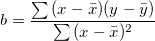

/math-6fbdf291cda891b99cf211417ad1df18.png "\bar{x}") and
and /math-bacfc7141fdfd692244b6c50891d1f7b.png "\bar{y}") are the means of x and y.
are the means of x and y.This function is used to calculate the intercept of the linear regression of the given curve, which is defined as:
where,
b is the slope which is defined as ,
and are the means of x and y.
double Intercept(vector vx, vector vy)
vx
vy
Return the the intercept of the linear regression of the given curve.
newbook; col(A) = data(1,5); col(B) = uniform(5); Intercept(col(A),col(B)) = ;